|
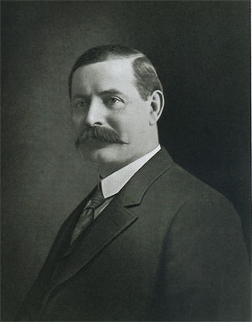 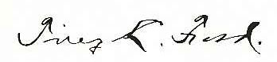
Tirey Lafayette Ford was a prominent attorney who served as a California state senator and attorney general. He authored Dawn of the Dons, a history of the Monterey Peninsula, and Emma Byington Ford. |
|
Tirey Lafayette Ford,
1857 - 1928
|
| December 29, 1857 |
Tirey Lafayette Ford, commonly known as T. L. Ford, was born on a farm in Monroe County, Missouri, the son of Jacob Harrison Ford (1821-1908) and Mary Winn Abernathy (1818-1891). The Ford family traced its American roots to French Huguenot ancestors who settled in Virginia in the seventeenth century.
Tirey's grandfather, Pleasant Thomas Ford (1792-1844), served under General William Henry Harrison during the Indian campaigns associated with the Battle of Tippecanoe. His great-grandfather, Jacob Ford (1759-1845), served during the American Revolutionary War and was reportedly with General George Washington at Yorktown when British General Lord Cornwallis surrendered in 1781. Source: History of the New California, The Lewis Publishing Company, 1905, pg 470. |
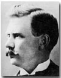 |
| 1860 | The 1860 U.S. Census lists Jacob Ford (37) Mary W. (42), James P (13), David E. (10), William H. (8), Arzilia (4), Tirey (2), and Berelda (2 mo). Source: US Federal Census, Missouri Clay Township, Monroe County, Granville Post Office, Roll: M653_635. | |
| 1863-1873/TD> | Tirey Ford went to the district school in Monroe County, Missouri. He rode his father's mule to the schoolhouse. Source: Notables of the West, International News Service, 1915, page 125. | |
| August 13, 1870 | The 1870 US Census lists Jacob Ford (48), Mary W. (53), James P (23), David E. (20), William H. (18), Arzilia R. (14), Tirey L. (12), Berelda F. (10). and Hugh W. (3). Source: US Census of Monroe County, Missouri. | |
| 1876 | Ford graduated from a private academy at Paris high school in Monroe County, Missouri. He worked evenings and Saturdays to pay for his board. He worked on his father's farm during summer and vacations. Source: Notables of the West, International News Service, 1915, page 125. | |
| February 11, 1877 | When Mr. Ford was 19 years old he took an emigrant train from Missouri to Colusa County, California. He worked on the ranch of his uncle, Hugh J. Glenn, Democratic candidate for Governor, for three years. Source: S.F. Newspaper, June 26, 1928. | |
| January 1, 1880 | He became a student in the law office of Colonel Park Henshaw in Chico, Butte county, California. Source: History of the New California - The Lewis Publishing Company - 1905. | |
| June 17, 1880 | The 1880 US Census lists William H. (28-Tirey's brother), Minnie E. (22), and Tirey L. (22-law student). Source: US Federal Census, Chico, Butte, California; Roll: T9_63; Family History Film: 1254063; Page: 143D; Enumeration District: 1; Image: 0290. | |
| July 13, 1880 | Tirey Lafayette Ford (age 22) was at the Oakdale, Butte, California Voter Registration office. Source: California Great Registers, 1866-1910, database, FamilySearch. | |
| August, 1882 | He passed the California Bar examination. Bar number: 270. Source: The State Bar of California. | |
| Tirey moved to Oroville, Butte county, California to practice law in partnership with Senator A. F. Jones, under the firm name of Jones & Ford. He also kept the books for some of the merchants in town. Source: Notables of the West, International News Service, 1915, page 125. | ||
| January 1885 | Ford moved to Downieville, the county seat of Sierra county, where he practiced law under the firm name of Smith & Ford. He stayed in Downieville for eight years. Source: Notables of the West, International News Service, 1915, page 125. | |
| February 1, 1888 | Ford married Miss Mary Emma Byington, oldest daughter of Hon. Lewis Byington and Catherine (Freehill) Byington and sister of Lewis Francis Byington. The marriage took place in Downieville, California. Source: Press Reference Library, 1915, INTERNATIONAL NEWS SERVICE. | |
| December 08 1888 | Relda Ford was born. She later married Samuel F. B. Morse. |
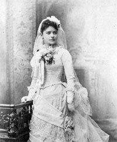 |
| 1888 | Ford was nominated and elected District Attorney of Sierra country on the Republican ticket by the largest majority than any candidate for that office in 17 years. Source: Sacramento Daily Union, Volume 84, Number 144, 4 February 1893. | |
| As District Attorney, Tirey L. Ford was mentioned as a friend of W.T. Ellis. Ellis talks about visiting Ford in Downieville and visiting the various saloons, each having many gambling tables. "Stacks of gold and silver piled up on the tables and all doing a rushing business." Source: Memories; my seventy-two years in the romantic county of Yuba, California, by W.T. Ellis; with an introduction by Richard Belcher, 1939. | ||
| 1890 | In 1890 Ford was re-elected to the District Attorney office without opposition, the Democrats making no nomination against him. He was very popular and highly respected. Source: Sacramento Daily Union, Volume 84, Number 144, 4 February 1893. |
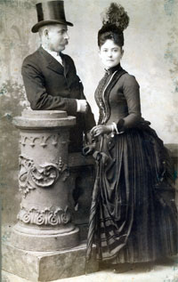 |
| November 1, 1890 | Lewis Byington Ford was born in Downieville, Sierra County, California. | |
| March 7, 1892 | Ford was elected President of the California Miners' Association. He was a successful mining lawyer and engaged as counsel by the Miners' Association to conduct important cases. Source: Sacramento Daily Union, Volume 83, Number 13. | |
| September 6, 1892 | Ford was elected State Senator, representing the Third Senatorial District of Plumas, Sierra, and Nevada counties. Source: Notables of the West, International News Service, 1915, page 125. | |
| February 4, 1893 | An article and illustration appeared in the Sacramento Daily Union, about Tirey L. Ford as the State Senator From the Third Senatorial District. Nevada, Plumas, and Sierra, the counties comprising the Third Senatorial District, were represented in the State Senate by Ford of Downieville. Source: Sacramento Daily Union, Volume 84, Number 144. |
|
| March 23, 1893 | Senator Ford introduced two bills known as the Ford Bills, Senate Bill No. 50, which allows hydraulic mining where it can be done without material injury to the navigable rivers, and Senate Bill No. 389, which appropriates $250,000 for building restraining dams, provided the United States Government. Source: Sacramento Daily Union. | |
| 1893 | Ford moved to San Francisco, California with his family to specialize in mining and corporation law and begin a lucrative individual practice. Source: Successful American, 1902, page 484. | |
| December 31, 1893 | Ford was a partner in the law firm of Cross, Ford, Hall & Kelly. Their offices were at 101 Sansome Street, San Francisco, California. Source: San Francisco Chronicle newspaper. | |
| 1894 | Ford was re-elected as California State Senator. Source: Successful American, 1902, page 484. | |
| February 14, 1894 | Senator Ford, of Downieville, delivered an eloquent address at the Whittier State School in Los Angeles. His subject was Abraham Lincoln. Source: Los Angeles Herald. | |
| April 1895 | Ford was appointed attorney for the State Board of Harbor Commissioners, which office he held until elected Attorney General of State in 1898. Source: Notables of the West, International News Service, 1915, page 125. | |
| June 27, 1895 | Mr. and Mrs. Tirey L. Ford took a trip to Alaska. Source: San Francisco Call, Volumne 78, Number 27. | |
| December 13, 1895 | Ford was elected by the Executive Committee of the State Miners' Association to go to Washington in January to expidite the passage through Congress for a bill to appropriate money for the construction of works to protect the rivers and streams of Califronia. Source: San Francisco Call, Volumne 79, Numbers 13 and 22. | |
| December 25, 1895 | In the San Francisco Call, an article entitled: "A Successful Lawyer and Legislator Chats About Public Life." Senator Ford says: "I must confess that public life has its fasinations for me. I like the exhilaration, or what Byron calls 'the rapture of the strife,' but I like more than all the achievement of results beneficial to those to whom I am indebted for political preferment." Source: San Francisco Call, Volumne 79, Number 25. | |
| 1896 | His uncle, Tirey Ford, wrote a six page letter about his descendents. |
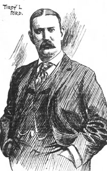 |
| May 26, 1896 | Ford returned home after four months in Washington working for the California mining interests and bills before Congress. Source: San Francisco Call, Volume 79, Number 178. | |
| July-Dec 1896 | Ford wrote two articles: "The Lamp of Experince Its Light on the Political Situation" and the "The Law and the Miner". Source: Overland Monthly, San Francisco Overland Monthly Publishing Company, 1896. | |
| August 23, 1896 | Ford spoke at the opening meeting on behalf of William Mckinley presidential campaign in San Francisco. The speech was titled: "William McKinley: Soldier, Statesman, Man and Leader". Ford was a popular and effective speaker. Source: Notable Speeches by notable speakers of the greater west, Pacific History Stories, page 473 and The San Francisco Chronicle, "To-Night the Republican Open the Campaign for the Champion of Protection". | |
| October 4, 1896 | Senator Tirey L. Ford addressed a large gathering at the Armory Hall in Downieville, CA." He was received with open arms by the miners, who tendered him a giant powder salute of welcome before the meeting. It was the largest political gathering of the campaign". Source: San Francisco, Volume 80, Number 126. | |
| January 12, 1898 | Tirey L. Ford was elected president of the Union League Club in San Francisco. The club extended fellowship to distinguished guests of the city. A reception was held for Governor Daniel H. Hastings of Pennsylvania, Attorney-General H. C. McCormick and State Senator J. H. Cochran of the Williamsport district. Source: San Francisco Call, Volume 83, Number 43. | |
| August 26, 1898 | Tirey L. Ford was nominated by Judge John F. Davis of Amador County for the office of Attorney General. Source: San Francisco Call, Volume 84, Number 87. | |
| September 26, 1898 | Tirey L. Ford spoke at the Hanford campaign for the Republicans of Kings County. "The Opera-house was crowded from floor to galleries. Ford's discussion of State and national Issues was presented in a masterly manner, and enthusiastically received". Source: San Francisco Call, Volume 84, Number 119. | |
| November 7, 1898 | Tirey Lafayette Ford Jr. was born. | |
| 1898 | Ford accepted the Repulican nomination for the office of Attorney General. He was elected Attorney General for the State. Source: Successful American, 1902, page 484. | |
| January 1, 1899 | Tirey L. Ford became the 18th Attorney General of the State of California, replacing W. F. Fitzgerald. Source: New York Times, pg. 2; San Francisco Call, Volume 85, Number 32. |
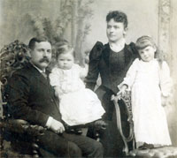 |
| January 2, 1899 | About half of the streetcar lines in San Francisco had been converted to overhead trolleys but there was strong sentiment against overhead lines and in favor of placing them underground. Source: The Political Graveyard. | |
| April 1900 | General Ford went to Washington, D.C, to argue a railroad tax case before the US Supreme Court. The case involved taxes due by the Santa Fe Railroad Co. to the State of California. The Supreme Court decided in favor of the State. Source: History of the bench and bar of California, 1897, Page 836. | |
| June 8, 1900 | The US Census lists T. L. Ford (42), Emma L. (37) Mary R. (11) and Lewis B. (9) Tirey L. Jr. (1) and servant Josie Switzer (2), living in San Francisco, California. Source: 1900 US Census, San Francisco, California; Roll: T623 105; Page: 6A; Enumeration District: 211. | |
| September 3, 1900 | Tirey L. Ford was listed as the Attorney-General and one of the state officials representing the California State Fair. Source: http://freepages.genealogy.rootsweb.ancestry.com | |
| November 2, 1900 | Ford, as Attorney General, addressed a large and enthusiastic meeting In Vallejo, CA. "Mr. Ford possesses a most convincing manner and eloquent delivery. His comparisons were well chosen and his efforts were greeted with so much enthusiasm that at times the din of applause was deafening. His remarks were full of Republican truths." Source: San Francisco Call, Volume 87, Number 155. | |
| November 6, 1900 | Ford gave a speech on national issues at the Republican campaign to a crowded house in Petaluma, Sonoma County, California. In this speech he said: "When the ballots were counted in November 1896, the Republican party was restored to power and at its head stood that soldier statesman whose name is now honored throughout the world - William McKinley." Source: San Francisco Call, Volume 87, Number 159. | |
| August 1902 | The United Railroads began making regular, secret payments to Abe Ruef as a special consulting attorney. These payments were made by Tirey L. Ford, who was also the Attorney General of the State of California. Source: The Clover Leaf Media Web page. | |
| September 15, 1902 | Ford resigned as Attorney General in order to become General Counsel for the United Railroads (URR) of San Francisco. "His knowledge of railroad law as of other departments of jurisprudence is comprehensive and accurate, and he stands to-day as one of the foremost representatives of the legal interests of California." He had been Attorney General since elected in 1898. The United Railroads had capital of $40,000.000, and owns all the street railway lines of San Francisco. Source: History of the New California - The Lewis Publishing Company - 1905: and the article: "Attorney-general Resigns Position", Sept. 12, 1902, San Francisco Chronicle | |
| February, 1903 | Ford was listed as Gen. Counsel for the United Railroads of San Francisco in the San Francisco phone directory. Source: 1903 Pacific States Telephone and Telegraph Company San Francisco phone directory. | |
| 1904 | Ford talks about the relations between captial and labor, which include demands of labor. For example, the demand for a "fair day's pay." Source: Relations Between Capital and Labor - Some General Principles Ably and Kindly Presented by Ex-Attorney General Tirey L. Ford. | |
| April 5, 1905 | Governor George Pardee selected Tirey L. Ford of San Francisco to be State Prison Director. Tirey later created a special bureau for paroled prisoners. Source: Notables of the West, International News Service, 1915, page 125 and San Francisco Call, Volume 97, Number 127. |
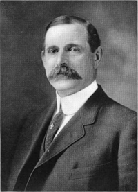 |
| Ford was also elected a member of the Board of Trustees of the Mechanics Institute of San Francisco. | ||
| Tirey was a member of the Pacific Union, Bohemian, Union League, Commonwealth, Press, Transportation, Merchants, Amaurot, and Southern Clubs, and as a Knight Templar. He was also a golf enthusiast. Source: Notables of the West, International News Service, 1915, page 125. | ||
|
Amaurot was also the name of a club that Tirey L. Ford and John McNaught were members of. It was also the capital city on the island of Utopia. Utopia was a popular book by Thomas More, written in 1516. “The Amaurot Club, an organization of men who dine together once a month, had an unusual outing last week end. They went, up Mount Hamilton to see a comet and were not disappointed, for the comet was glorious In the clear air of Saturday night and displayed more tail than on many a previous night of the superior clarity of a sphere.” Source: Oakland Tribune from Oakland, California · Page 11 “He [Franklin K Lane] took much pleasure in a dinner club that he helped to form. The members were University professors, lawyers, newspaper men, and a few business men. But, says one of them, in spirit they were poets, philosophers and prophets. They were aware that their solutions of problems vexing to the brains of other men, would be Utopian, but as they were not willing to be classed with ordinary Utopians they named their club Amaurot, after the capital of Utopia, thus signifying that while they dwelt in Utopia, they were not subject to it but were lords of it--the teachers of its wisdom and the makers of its laws." Source: The Letters of Franklin K. Lane. |
||
| February 26, 1906 | Tirey Ford was honored as a guest at a dinner at the Press Club. The dinner was given in recognition of the good work Ford had done for the club. Source: Newspaper clipping. | |
| April 18, 1906 | The famous San Francisco earthquake and fire struck, which destroyed most of San Francisco. The race to rebuild the city allowed the URR to replace a majority of its cable car lines with electric streetcar lines. Source: Market Street Railway. A Brief History of Market St. Railway. | |
| May 21, 1906 |
Telegrams directing money to be paid to Ford read: "Hon. Frank A. Leach, Supertintendent U. S. Mint, SF. Please pay General Tirey L. Ford fifty thousand dollars from Patrick Calhoun's account who was President of the United Railroads of San Francisco (July 28, 1906)."
"Hon. Frank A. Leach, Supertintendent U. S. Mint, SF. Please pay General Tirey L. Ford one hundred thousand dollars from Patrick Calhoun's account who was President of the United Railroads of San Francisco (August 21, 1906)." Source: The System: as uncovered by the San Francisco Graft Prosecution by Franklin Hichborn, 1915. Patrick Calhoun received a total of $200,00 Source: San Francisco Call, Volume 102, Number 120, 28 September 1907 Tirey was charged with offering a bribe to San Francisco city officials to secure an overhead trolley lines permit for the United Railroads. |
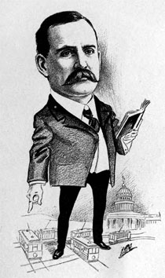 |
| 1906 | A cratoon of Tirey L. Ford was displayed in the Californians "As We See Em" A Volume of Cartoons and Caricatures, 1906. | |
| April 19, 1906 | As attorney for the United Railroads and ex-California Attorney General, Tirey L. Ford became a member of the Committee of Fifty for the work relief and the restoration of the city of San Francisco after the disaster of the 1906 earthquake. His name was mentioned by different sources as a member. Source: San Francisco Municipal Reports; Wikipedia article about the Committee of Fifty; New York Times; Gordon Thomas & Max Morgan Witts: The San Francisco Earthquake, Stein and Day, New York; Souvenir Press, London, 1971. | |
| Mary 14, 1907 | A newspaper title reads: "Tirey L. Ford Declares Graft Investigation of Railroad Illegal and Refuses to Testify." He tells grand jurors that Francis J. Heney has no right to be present during sessions of the jury. Source: The San Francisco Call, Volume 101. | |
| October 5, 1907 | The case against Tirey L. Ford, accused of the bribery of former Supervisor Thomas F. Lonergan, went to the jury. Newspaper reads: "FORD CASE IN JURY'S HANDS". Source: Salt Lake Herald. | |
| November 26, 1907 | The case of Tirey L. Ford continues. The newspaper heading reads: "Trial of Ford Begins Monday." Source: Salt Lake Herald. | |
| Jan-Oct. 1908 | The United Railroad of San Francisco Library was open to attorneys from 8:30 AM to 5:40 PM. It was located at Oak and Broderick streets. Total number of volumes was about 3,300. Ford was General Consel. Re-established since April, 1906. Source: News Notes of California Libraries, Sacramento. |

Taber Studio - 121 Post Street San Francisco, California |
| April 4, 1908 | The third trial began in the case against Tirey L. Ford, charged with the bribery of Supervisor Daniel G. Coleman in securing a franchise for the United Railroads to erect an overhead trolley system. Source: Ogden Standard Examiner newspaper. | |
| May 3, 1908 | Tirey L. Ford, was found not guilty by a San Francisco jury. Another newspaper reads: "T. L. Ford is FREE MAN." Source: New York Times, pg. 6; The Ogden Standard Examiner. | |
| January 16, 1910 | At a meeting in San Quentin, Tirey L. Ford was elected to replace Robert Devlin as president of the state board of prison directors. Source: San Francisco Call, Volume 107, Number 47. | |
| April 30, 1910 | Tirey Ford (52), is listed in the 1910 US Census along with his wife Emma B. (47), Relda F (27), Byington (19), Tirey L. Jr. (12). Source:1910 U.S. Census for Maple Street, San Francisco, California, Series: T624, Roll: 100 Page: 85. | |
| June 10, 1910 | Hon. Tirey L. Ford, 623 Balboa Building, San Francisco, wrote a response to a letter from Robert T. Devlin former President of the State Board of Prison Directors. Tirey asked heads a number of penitentiaries and reform schools for advice and judgment on governing their institution. Source: Report of the State board of prison directors of the state of California upon a proposed reformatory for adult offenders. December, 1910. | |
| October 21, 1910 | Ford, a member of the state board of prison directors, wrote a book called "California state prisons: their history, development and management." Source: Los Angeles Herald, Volume 33, Number 20. | |
| August 17, 1911 | A San Francisco judge, William P. Lawlor, dismissed all indictments in the trolley bribery cases against Tirey L. Ford, and other officials of the United Railroads. Source: New York Times, pg 3. | |
| August 24, 1912 | A newspaper article said that "Mrs. Frederick V. Stott, formerly Miss Relda Ford, will leave next Tuesday for her home in New York after a visit with parents, Mr. and Mrs. Tirey L. Ford, at their home in Clay street." Source: San Francisco Call, Volume 112, Number 85. | |
| December 23, 1913 | With the completion of his 10 years' term as a member of the board of prison directors, Tirey L. Ford announced that he would retire, not seeking the reappointment of the position. Source: San Francisco Call, Volume 115, Number 151. | |
| July 25, 1914 | Ford retired from the United Railroads Company as chief counsel. Source: Sausalito News, Volume 30, Page 6. | |
| 1915 | Ford was listed as a director of the Sierra and San Francisco Power Company. Head office was at 58 Sutter St., San Francisco. Source: Walker's Manual of Western Corporations, page 251. | |
| January 3, 1916 | Ford was an avid golfer and won the Club Shield of the Presidio Club in the tournament where he had the best net score of 74 for the courses. Source: San Francisco Chronicle. | |
| October 22, 1916 | Ford was host at a luncheon at the Steward Hotel to the Animated cartoon Film Corporation. His son, Byington Ford, secretary and treasurer was also there. Source: San Francisco Chronicle | |
| 1916 | Ford was listed as "Ford Tirey L (Emma) at 593 Market h 3800 Clay."His son was listed as "Ford Byington with Urban Realty Imp Co r 3800 Clay." Source: Fold3, City Directories for San Francisco, California. | |
| October 22, 1916 | Ford was host at a luncheon given at the Stewart Hotel for the Animated Cartoon Film Corporation. Artists, cartoonists and photographers were discussed and views exchanged. Among those present were Frederick Burgh, president of the corporation; Byington Ford, secretary and treasurer; C. E. Cleaveland, superintendent, and Seth Heney, manager. Source: San Francisco Chronicle, page 30. | |
| 1917 | Ford was listed as "Ford Tirey L (Emma) at 593 Market h 3800 Clay." His son was also listed as "Ford Byington L genl mgr Animated Cartoon Film Corp r 3800 Clay." Source: Fold3, City Directories for San Francisco, California. | |
| 1917 | Ford wrote an article "The City Imperishable". He talks about the great city and how the 1906 earthquake and fire that destroyed four square miles (2,500 acres). Source: San Francisco The Metropolis of the West. | |
| January 15, 1920 | Tirey Ford (62), is listed in the 1920 US Census along with his wife Emma B. (56) and son Tirey Jr. (21). Source:1920 U.S. Census for San Francisco Assembly District 28, San Francisco, California; Roll: T625_140; Page: 14A; Enumeration District: 276; Image: 949. | |
| June 11, 1921 | His wife Mrs. Emma Byington Ford, died at home on 2800 Jackson Street in San Francisco. She was buried at the Holy Cross Cemetery. Source: Oakland Tribune. | |
| August 22, 1922 | From the Balboa building in San Francisco, Tirey L. Ford wrote a poem to Mary Jane Ford, his one year old granddaughter, saying "Well, Mary Jane, how does it feel to be a whole year old, and know that you can laugh and cry and boss and tease and cold..." it was signed "Grandpa Ford." Source: Handwritten letter written on Tirey's personal stationary from the 917 Balboa Building in San Francisco. |
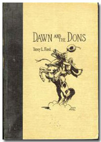 by Tirey L. Ford |
| 1924 | Listed as a non-resident member at the The Pacific-Union Club: "FORD, Tirey L., 393 Market". The club is one of the exclusive clubs of San Francisco, luxurious in its accommodations and provided with an excellent library. Source: San Francisco Blue Book and Club Directory, 1924. | |
| February 19. 1925 | Byington Ford appeard on a membership list of the 68 charter members of the Monterey Peninsula Country Club. Source: The First Fifty Years 1925-1975. | |
| 1926 | After his retirement, he took up historical studies and literary pursuits, and he published a well-received novel, Dawn and the Dons: The Romance of Monterey with vignettes and sketches by Jo Mora. The book was published in 1926 by A.M. Robertson of San Francisco. | |
| 1927 | Ford was listed in the SF Social Register. There address was listed as Pacific Union Club on 1000 California Street. He was elected as a member on June 27, 1901. Source: San Francisco Social Register 1927. | |
| June 26, 1928 | Tirey L. Ford died of a heart attack, in bed after he had ordered breakfast sent up to his room, at the Pacific Union Club in San Francisco. Source: S. F. Newspaper. |
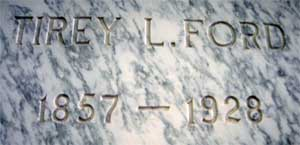 Holy Cross Catholic Cemetery |
| June 28, 1928 | Ford's funeral service was held at 10 o'clock at Gary's Chapel on Divsadero street at Post. Internment was private at the Holy Cross Cemetery main mausoleum, Colma, San Mateo County, California. Source: The Political Graveyard; Holy Cross Cemetery records (location B-1111). |

Last updated: September 18, 2026

The text of this page is available for modification and reuse under the terms of the: Creative Commons Attribution-Sharealike 3.0 Unported License and the GNU Free Documentation License (unversioned, with no invariant sections, front-cover texts, or back-cover texts).